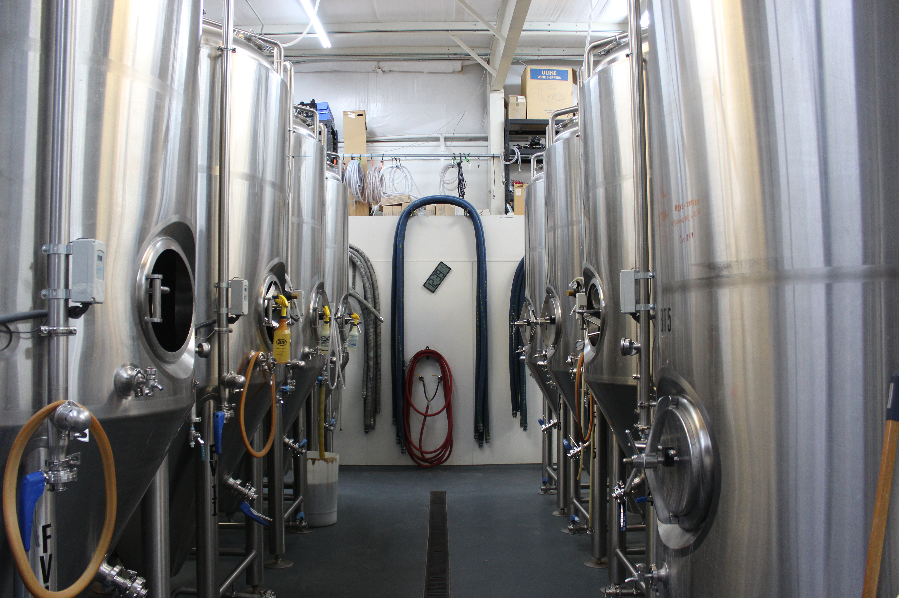
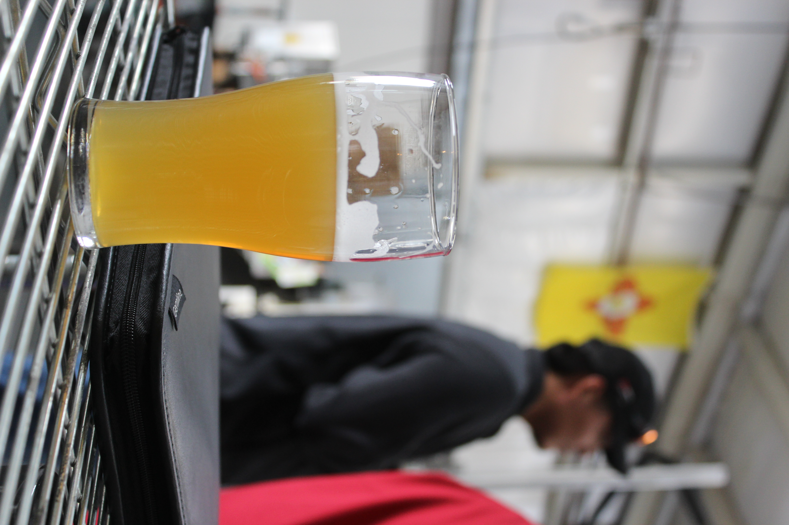
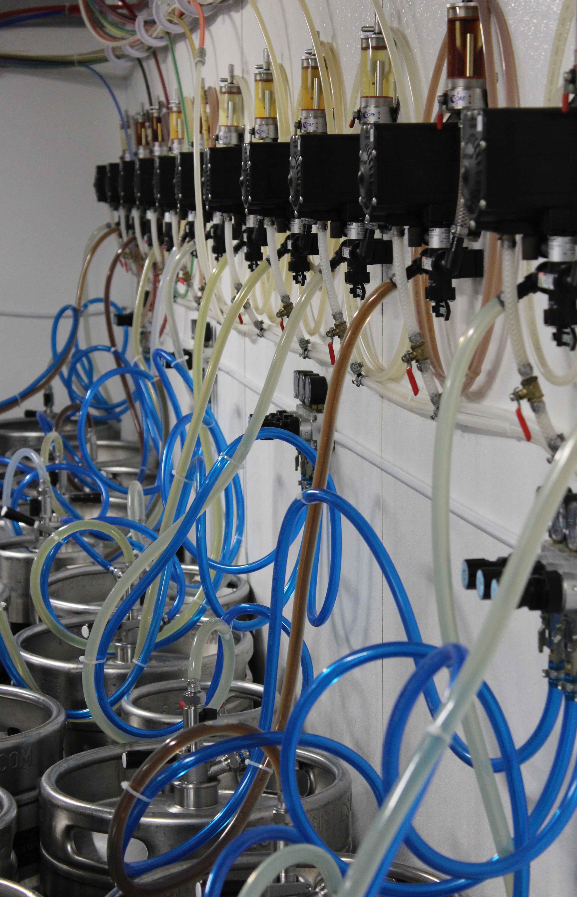
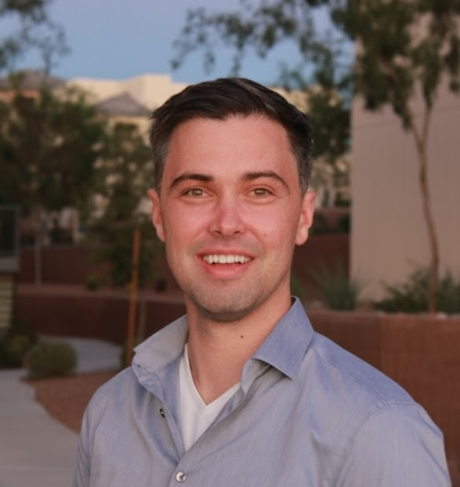
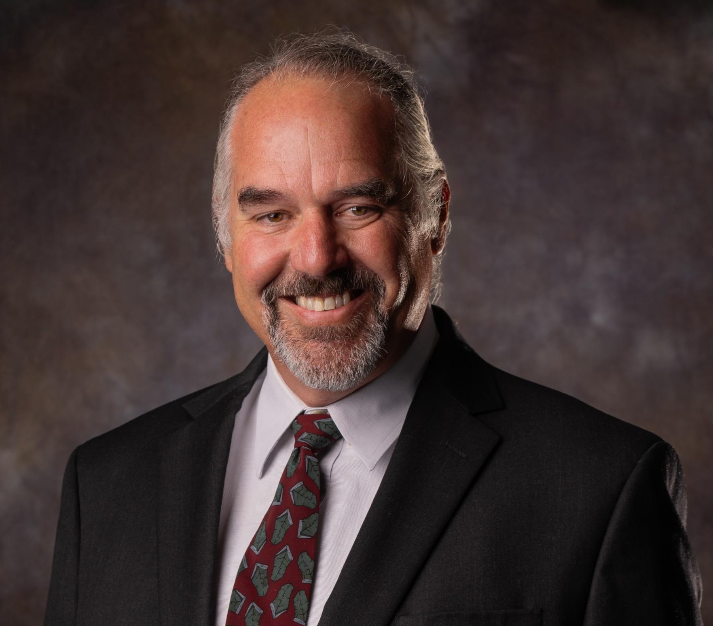
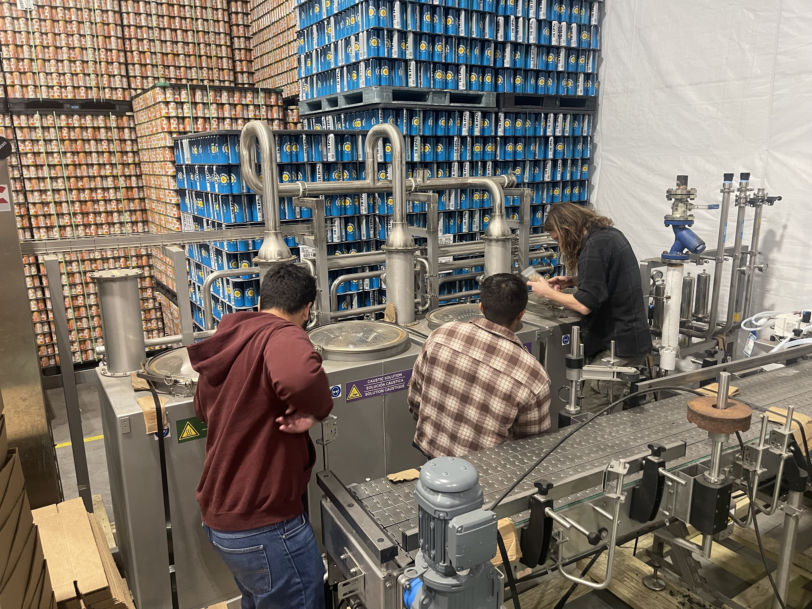

Building cleaner cleaning.
Automated CIP for small craft breweries — designed honest, built local.
SaniBrau Labs is an engineering team developing the SaniBrau Station: a programmable cleaning system for fermenters, brite tanks, and brewing vessels at the 10–20 BBL scale. We are in active development. Our first prototype completes May 2026, and our first pilots run with New Mexico breweries through summer 2026.

Cleaning is the part of brewing nobody photographs.

Most small breweries spend several hours a day cleaning. Vessels get scrubbed by hand. Hoses get rinsed and re-rinsed. Caustic and acid get measured by feel. The water-to-beer ratio at the small end of the industry tends to sit somewhere between 7:1 and 10:1, and a meaningful share of that is cleaning water that goes straight to the drain.
Commercial CIP systems exist — they're standard equipment at any brewery above about 50 BBL. Below that, brewers are usually on their own. Manual buckets and pump-around setups on the small end. Six-figure industrial systems on the large end. Not much in between.
That gap is what we're working on.
Proven components, careful integration, real brewery testing.
The SaniBrau Station is built around commercial off-the-shelf hardware — a Siemens PLC, a brewery-grade circulation pump, automated chemical dosing, multi-stage filtration, and a sanitary spray manifold inside a NEMA 4X enclosure. We did not invent any of those parts. We are putting them together in a way that works for a 10–20 BBL brewery and that a working brewer can actually operate.
The integration is the design. Cycle logic, dosing behavior, water recovery, the operator interface — that's where the engineering work lives, and that's what summer 2026 pilots will tell us is right or wrong.

What the system is designed to do
These are design targets, not measured results. The pilot program is what turns targets into evidence.
- Targeted Reduce water used per cleaning cycle by recovering and reusing rinse water through multi-stage filtration (sediment, carbon, UV).
- Targeted Cut hands-on cleaning time by replacing manual scrub-and-rinse work with programmable cycles.
- Targeted Provide cleaning records that meet brewery operational documentation needs.
- Targeted Stay within reach of small brewery budgets — well below the cost of full industrial CIP.
How we tag every claim
Mixing the three is the most common failure mode for early-stage hardware. We tag every claim before it ships. The public site states Built and Targeted only.
Built
Things that exist in the prototype right now, or that are documented and verifiable. State plainly.
e.g. "Siemens LOGO! 8.4 PLC in NEMA 4X enclosure."
Targeted
Engineered to achieve, but not yet benchmarked. Always flag with targeting, designed for, aiming to.
e.g. "Targeting 7:1 water-to-beer ratio."
Vision
On the roadmap. Used sparingly. Doesn't appear in headline copy.
e.g. "Future versions may add IoT monitoring."
Pre-pilot. Building. Honest about the timeline.
We are deliberate about not overstating where SaniBrau is. Here is the timeline as it actually stands.
-
Now → May 2026
Prototype build
The first SaniBrau Station is being assembled as a senior mechanical engineering capstone project at New Mexico State University, with technical guidance from Dr. Stephen Taylor and the NMSU Brewery Lab. Originally scoped for a March 2026 build, the team adapted the design after several long-lead components were no longer available at order time. Build complete around May 2026.
-
Summer 2026
Pilot validation
We will run the prototype with a small group of New Mexico breweries — a brewery tour rather than a product launch. The goal is to validate the design under real operating conditions, measure performance against our targets, and learn what needs to change before any second build.
-
Late 2026 →
Refinement, then a decision
After pilot data is in, we will know whether SaniBrau is ready to support more breweries, what it would take to get there, and on what terms. Equity, hiring, manufacturing, and commercial launch decisions all wait until then.
A small team, with help from people who know more than we do.
SaniBrau Labs was started by two electrical engineering students at NMSU. We are not industry veterans. We are a small founding team learning to build a hardware company in public, with a lot of help from people who have done parts of this before.
Russell "Kevin" Buehling
Electrical engineering background, with a focus on controls and embedded systems. Leads the controls and software side of the SaniBrau Station, and most of what you're reading.

Nathan Marlin
Ten years in naval power and fluid systems before returning to school for an EE degree. Leads the fluid, mechanical, and power systems work on the prototype.

Dr. Stephen Taylor
Faculty at NMSU and operator of the NMSU Brewery Lab. Provides technical guidance on brewing process, water chemistry, and cleaning validation.
NMSU senior capstone team
A team of mechanical, industrial, and engineering technology students at NMSU is building the first prototype as a senior capstone project. They are doing real engineering work, and the prototype would not exist without them.
Become a partner brewery.
We are looking for a small group of New Mexico breweries to host the SaniBrau Station for pilot testing in summer 2026. Partnership means hands-on involvement — running real cleaning cycles, sharing observations, helping us figure out what works and what doesn't on a real brewery floor.
What we're looking for
- A 10–20 BBL brewery in New Mexico (priority on the southern half of the state for same-day support).
- Willingness to run scheduled cleaning cycles with the SaniBrau Station and share what you observe.
- A working relationship — partner breweries are collaborators in development, not customers.
What partner breweries can expect
- No cost for the pilot itself.
- A standard mutual NDA covering both your operational data and our design — protecting both sides.
- Direct access to the founding team for questions, fixes, and changes.
- Influence on what the production version of SaniBrau looks like.

Not a brewer? Still interested?
Researchers, sustainability funders, brewers outside New Mexico, future collaborators, family members who finally figured out what we've been working on — drop your email and we'll send occasional updates. No frequency commitment, no marketing, just news when there is some.